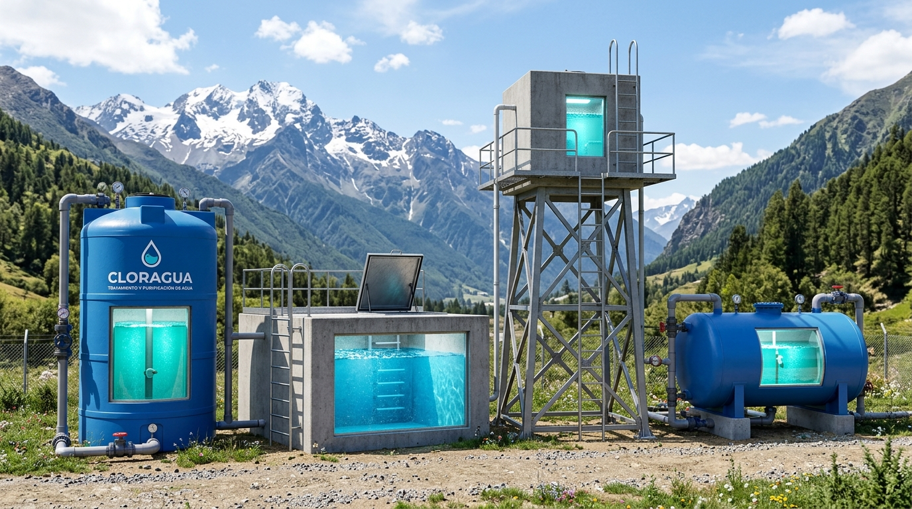
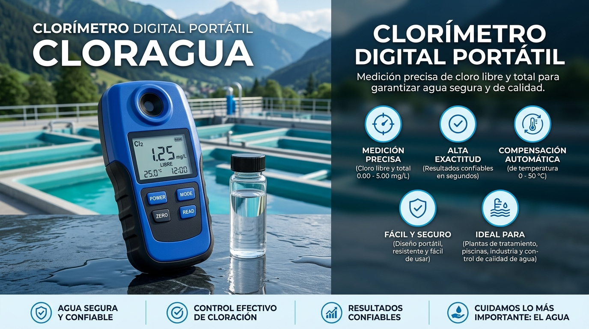
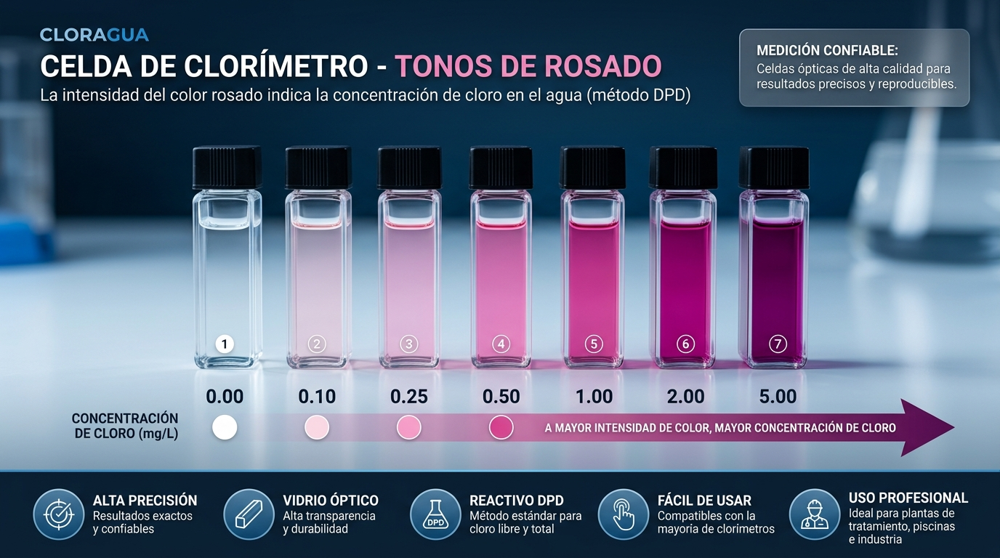

Uso responsable
CLORAGUA es una herramienta de apoyo técnico; no sustituye la vigilancia sanitaria, mediciones de campo ni las indicaciones de la autoridad competente.
SOLUCIONES INTEGRALES EN CLORACIÓN Y TRATAMIENTO
Tecnología, experiencia y compromiso para garantizar agua segura y de calidad para comunidades e industrias.
Sistemas de cloración eficientes para potabilización y desinfección continua en redes y reservorios.
Acceder al asistente arrow_forwardSoluciones completas para preparación de soluciones desinfectantes y acondicionamiento químico.
Preparar solución arrow_forwardEquipos de alta calidad y tecnología avanzada para dosificación por goteo y control preciso de caudal.
Calibrar dosificador arrow_forwardServicio técnico especializado y asistencia inmediata vía WhatsApp (920 221 581) para operación ininterrumpida.
Contactar soporte arrow_forwardCONFORMIDAD SANITARIA
CLORO RESIDUAL LIBRE
VOLUMEN EN RESERVA
SISTEMAS VIGILADOS
El tanque dosificador de solución madre tiene autonomía estimada de 5.4 días al ritmo de consumo actual.
ASISTENTE DE DOSIFICACIÓN
Complete los pasos. El resultado es una estimación que requiere verificación en campo.
Use el volumen calculado o ingréselo directamente.
⚠ Verifique que la concentración corresponda al cloro activo declarado por el fabricante.
ⓘ El rango normativo puede variar según punto y condición del sistema. Mantenga sus parámetros actualizados.
RESULTADO DE LA DOSIFICACIÓN
Esta es una estimación técnica. Dosifique, respete el tiempo de contacto aplicable y mida nuevamente el cloro residual.
Determine el volumen real de agua almacenada y capacidad total antes de iniciar el proceso de cloración.

Ingrese las dimensiones geométricas del reservorio
VOLUMEN EFECTIVO CALCULADO
Ingrese las dimensiones del reservorio y presione calcular.
Realice mediciones precisas de cloro libre y total con el clorímetro digital tras el tiempo de contacto normativo.

Medición precisa de cloro libre y total para garantizar agua segura y de calidad en sistemas de agua potable, JASS e industrias.
Ingrese el resultado para conocer el estado de referencia.
Una medición no confirma por sí sola la potabilidad microbiológica.
La intensidad del color rosado indica la concentración de cloro libre en el agua (Método DPD).

CONTROL DE EQUIPOS
Calcule el caudal requerido y compare con una prueba real.
PREPARACIÓN
Calculadora de dilución para soluciones de hipoclorito.
Ingrese las concentraciones y el volumen final.
REGISTRO
Guarde los datos principales de los sistemas a su cargo.
VIGILANCIA
Registre y consulte las verificaciones realizadas.
REFERENCIAS TÉCNICAS
Parámetros configurables; confirme siempre los documentos oficiales vigentes.
Reglamento de la Calidad del Agua para Consumo Humano. Referencia para vigilancia sanitaria y control de la calidad del agua.
Parámetros de referencia actualizados localmente:CLORAGUA es una herramienta de apoyo técnico; no sustituye la vigilancia sanitaria, mediciones de campo ni las indicaciones de la autoridad competente.
Medir → Calcular → Dosificar → Esperar el tiempo de contacto → Medir nuevamente → Verificar → Registrar.
Los rangos operativos se pueden ajustar en la verificación para adecuarlos al protocolo oficial aplicable.